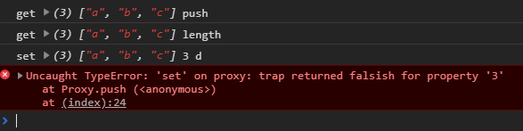

101-v3响应式数据的本质
1、资料来源
2、Proxy的用法
Proxy可以在对象外层加一层拦截，但获取/设置对象值的时候，先经过这层拦截
const person = {name:'小明',age:12};
const state = new Proxy(person, {
get (obj, key) {
console.log('get', obj, key);
return obj[key];
},
set (obj, key, newVal) {
console.log('set', obj, key, newVal);
obj[key] = newVal;
// vue在这里去更新html
}
});
state.name = '小红'; // 触发set钩子
console.log(state.name); // 触发get钩子
// proxy的好处，如果属性原先没有的也会触发钩子
state.sex = '女'; // 触发set钩子
除了JSON，对于数组一样适用
const arr = ['a', 'b', 'c'];
const state = new Proxy(arr, {
get (obj, key) {
console.log('get', obj, key);
return obj[key];
},
set (obj, key, newVal) {
console.log('set', obj, key, newVal);
obj[key] = newVal;
}
});
state.push('d'); // 往数组添加一个元素
然而上面的会报错，错误信息:Uncaught TypeError: 'set' on proxy: trap returned falsish for property '3'

我们来解析下控制台这些信息，对于state.push('d')这句话，做了哪些动作:
- 获取state上的
push()方法，这也就是为什么第1句是触发get钩子，key=push push()是往数组最后添加一个元素，所以需要知道数组的长度，获取数组的length属性，又触发了get钩子，key=length- 接着
push()往数组最后位置添加，就触发了set钩子 - 正常来说，等到最后位置添加好后，应该去修改数组的length，使其+1。
但是上面代码执行完第3步就停止了，是因为我们并没有在set中return true。有这个return，js才知道第3不完成了，才会继续走。
所以代码改为:
set (obj, key, newVal) {
console.log('set', obj, key, newVal);
obj[key] = newVal;
return true; // 加上这一句即可
}
Proxy只会拦截第1层
const obj = {
name: 'xiaoming',
a: {
b: {
c: 1
}
}
};
const state = new Proxy(obj, {
get (obj, key) {
console.log('get', key);
return obj[key];
},
set (obj, key, newVal) {
console.log('set', key);
obj[key] = newVal;
return true;
}
});
state.name = '小红'; // 触发1次set
state.a.b.c = 1; // 触发1次get，因为有`state.a`
state.a.b = 3; // 触发1次get，因为有`state.a`
从上面可以看出，只有对第1层属性设置/获取的时候，才会触发get/set
3、 封装一个shallowReactive和shallowRef
从上面Proxy的特性，就不难封装一个shallowReactive/shallowRef了
我们知道shallowReactive只监听第1层，这个和proxy完全一样。
而shallowRef只监听.value层，我们将其传入的参数A，再包装一层即可{value:参数A}
// 封装一个shallowReactive
function shallowReactive (obj) {
return new Proxy(obj, {
get (obj, key) {
console.log('get', key);
return obj[key];
},
set (obj, key, newVal) {
console.log('set', key);
obj[key] = newVal;
console.log('更新html');// vue在这里更新html
return true;
}
});
}
const state = shallowReactive({
name: '小明',
a: {
b: {
c: 1
}
}
});
state.name = '小红'; // 触发set
state.a.b.c = 3; // 不会触发set,就不会html更新
state.a.b = 4; // 不会触发set,就不会html更新
// 封装一个shallowRef
function shallowRef (value) {
return shallowReactive({value});
}
const state2 = shallowRef({
name: '小明',
a: {
b: {
c: 1
}
}
});
state2.value.a = 11; // 不会触发set，所以不会更新html
state2.value = 1; // 触发set，所以更新html
4、 封装一个reactive和ref
reactive/ref和shallowReactive/shallowRef的区别是每一层都监听，那么我们只要变量下对象的属性，判断该属性的value是否为一个对象，是的话就将其再封装成一个proxy。
说白了这是一个递归调用，结束添加是对象value不是一个对象
要考虑数组和json格式2种
// 封装一个reactive
function reactive(obj) {
if (typeof obj !== 'object') {
console.log('传递进来的不是一个object类型');
return false;
}
// obj是一个数组，那么就遍历数组，看每个原始是否为对象
// 比如 obj=[{name:'小明'}, {name:'小红'}] 这种情况
if (Array.isArray(obj)) {
obj.forEach((item, index) => {
if (typeof item === 'object') {
obj[index] = reactive(item); // 重新赋值给原来的位置
}
});
} else {
// obj是一个JSON对象的情况，就需要看每个属性的value是否为一个对象
for (const [key, value] of Object.entries(obj)) {
if (typeof value === 'object') {
obj[key] = reactive(value);
}
}
}
return shallowReactive(obj);
}
const state3 = reactive([{name:'小明'}, {a: {b: {c: 1}}}]);
state3[0].name = '小红'; // 触发set，更新html
state3[1].a.b.c = 1; // 触发set，更新html
const state4 = reactive({a: {b: {c:1}}});
state4.a.b.c = 12; // 触发set，更新html
对于封装ref()就更简单了，基于reactive()包装一层.value即可
function ref (value) {
return reactive({value});
}
const state5 = ref({a: {b: {c: 1}}});
state5.value.a.b.c = 12;
5、封装一个shallowReadonly和readonly
我们知道shallowReadonly()是控制第1层属性只读，那么我们只要把Proxy的set()中设置值的代码去掉即可
function shallowReadonly(obj) {
return new Proxy(obj, {
get (obj, key) {
console.log('get', key);
return obj[key];
},
set (obj, key, newVal) {
console.log('set', key);
// 去掉这2句并给下warn警告
// obj[key] = newVal;
// console.log('更新html');
console.warn(`${key}属性为只读`);
return true;
}
});
}
const state6 = shallowReadonly({a: {b: {c:1}}});
state6.a = 12;// 异常，只读
state6.a.b.c = 111; // js会变，html不会更新
如果是reactive+shallowReadony一起使用也是和vue一样的效果
const state7 = reactive({a: {b: {c:1}}});
const state8 = shallowReadonly(state7);
state8.a = 12;// 异常，只读
state8.a.b.c = 111; // js会变，html也会更新
而readonly()其实也是类似，去递归对象的value，每一层都加shallowReadonly()